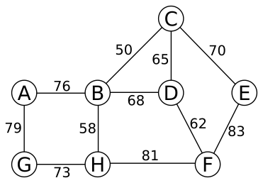

Recall this language from the last homework (slightly modified):
HAM-EXTEND \(=\{\langle G=(V,E),k\rangle : k\) is an integer such that \(k\geq 0\) and there exists a set \(E'\) of edges such that \(|E'|\leq k\) and \(G'=(V,E\cup E')\) is Hamiltonian \(\}\)
Prove that HAM-EXTEND is NP-complete. You may take as a “known NP-complete problem” any of the problems proved NP-complete in Section 34.5, and any of the ones mentioned as NP-complete in the exercises at the end of that section. This question is incredibly easy if you think about it clearly (if you understand why the next question is harder, you’ll see the easy way to solve this one!)
The following language is modified so that \(k\) must be at least 100:
HAM-EXTEND-100 \(=\{\langle G=(V,E),k\rangle : k\) is an integer such that \(k\geq 100\) and there exists a set \(E'\) of edges such that \(|E'|\leq k\) and \(G'=(V,E\cup E')\) is Hamiltonian \(\}\)
Prove that HAM-EXTEND-100 is NP-complete. (Hint: This problem isn’t quite as easy as it seems at first, and despite the fact that HAM-EXTEND-100 refers to Hamiltonian graphs – meaning graphs with Hamiltonian cycles – the best problem to reduce from may not be HAM-CYCLE! There is a deceptively simple approach with HAM-CYCLE that almost works, but has one fatal flaw – don’t get hung up trying to make that work out, but rather try different approaches.)
Consider the following language:
HAM-EXTEND-V \(=\{\langle G=(V,E),k\rangle : k\) is an integer such that \(k\geq |V|\) and there exists a set \(E'\) of edges such that \(|E'|\leq k\) and \(G'=(V,E\cup E')\) is Hamiltonian \(\}\)
Do you think this problem is NP-complete? You don’t have to prove anything, but give clear reasoning to support your answer. To paraphrase Einstein, your answer should be as simple as possible, but not simpler.
From the example we did in class, it is clear that the order in which edges are considered in Approx-Vertex-Cover can affect the quality of the solution, where the size of the approximate solution is always between the minimum vertex cover size and 2 times the minimum vertex cover size. Explore this concept by creating simple graphs that satisfy each of the stated properties below (each one has a solution that is just a 4-vertex graph). For each part, explain how your graph satisfies the requested property (don’t just give the graph – explain your solution!).
Give a graph such that every possible order in which the edges could be considered results in Approx-Vertex-Cover producing a set of vertices that is 2 times the minimum vertex cover size.
Give a graph such that some orderings of edges lead to Approx-Vertex-Cover producing an optimal solution (a minimum vertex cover), and other orderings of the edges (of the same graph) lead to Approx-Vertex-Cover producing a set of vertices that is 2 times the minimum vertex cover size.
Give a graph such that every possible order in which the edges could be considered results in Approx-Vertex-Cover producing an optimal solution (a minimum vertex cover).
The input to the traveling-salesperson problem is a complete weighted graph, which is difficult to draw when there are more than 5 vertices. However, consider the following weighted graph, and then imagine that we create the graph \(G\) by “completing” the edge set by adding every missing edge with a weight of 100. So, for example, there are edges \((A,C)\), \((A,H)\), \((B,F)\) and so on, all with weight 100.

\(G\) satisfies the triangle inequality. Give a simple one sentence explanation of why this is so.
There is a unique minimum-spanning tree for \(G\), and it contains only edges that are in the original picture. Give a simple one or two sentence explanation of why both of these properties hold. (Hint: Think about how Kruskal’s algorithm would run on \(G\).)
Demonstrate the Approx-TSP-Tour algorithm from the book on this graph. You can give the MST in a single step (in other words, you don’t have to show each step of Kruskal’s algorithm), but carefully explain how you use the MST to give the TSP tour. Clearly state the final answer (the TSP tour) and the total cost of this tour.
Some NP-complete problems that take numbers in their input become easy to solve on restricted ranges of numbers, and some remain NP-complete.
Consider this slightly modified version of the set partition problem: A weighted set of items \(S\) is a set of distinct items \(S=\{x_1,x_2,\ldots,x_n\}\) along with a weight function so that we can refer to the weight of item \(x_i\) as \(w(x_i)\). Define
SET-PARTITION \(=\{\langle S\rangle : S\) is a weighted set, and there is a subset \(A\subseteq S\) such that \(\sum_{x\in A}w(x) = \sum_{x\in S-A} w(x) \}\).
If weights are arbitrary, then this is equivalent to the standard set partition problem, so is NP-complete. However, if all of the weights are either 1 or 2, then the problem is easily solvable in polynomial time. Describe an algorithm that solves this problem in this special setting. Your description can be brief, but it does need to be clear and unambiguous. You can use pseudocode or an English description of the algorithm, and you should include a brief explanation of why it works.
Consider the TSP problem when all weights are 1 or 2. Even with this restriction on the weights, the problem is NP-complete. Using the NP-completeness proof of TSP as a guide (on pages 1096-1097 of the textbook) describe why this is so. You do not have to give a full NP-completeness proof, but you should explain how this setting modifies the book’s proof and why it is still valid.
Do complete graphs in which all weights are 1 or 2 satisfy the triangle inequality? Give a one sentence explanation of why.
Is the Approx-TSP-Tour algorithm from the book useful for this kind of TSP problem, where all weights are 1 or 2? Give a brief one or two sentence explanation of your answer.